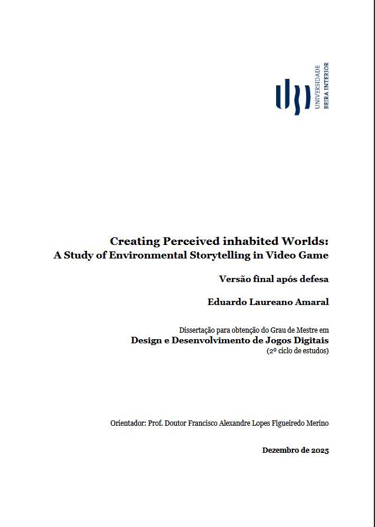

Creating Perceived inhabited Worlds: A Study of Environmental Storytelling in Video Game
Dissertation written as the final project of my master's degree. It studies how creating worlds with environmental storytelling in mind helps the player feel more connected with the game world and create the perception that the world exists beyond the presence of the player, as if it was real.
Read on uBibliorum ↗